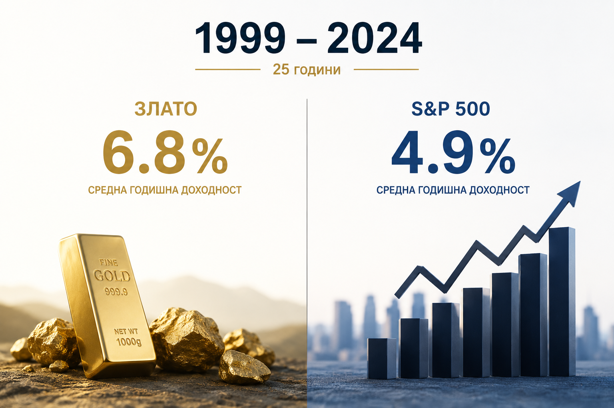

„Пътуване във времето“: защо златото победи акциите от 1999 г.?
Историята не казва кой актив е най-добрият. Историята казва кога всеки актив е бил най-добрият.
В продължение на десетилетия едно правило се повтаря почти като аксиома във финансовия свят: ако инвестирате достатъчно дълго, акциите винаги ще победят всички останали активи. Това твърдение присъства в почти всяка книга за инвестиции, в повечето университетски учебници и в голяма част от препоръките на финансовите консултанти. Историческите данни наистина показват, че в периоди от 40, 50 или дори 100 години акциите носят най-висока доходност. Проблемът е, че много малко инвеститори живеят в подобен хоризонт. Повечето започват да инвестират в конкретен момент от живота си – когато започнат работа, когато натрупат първите си спестявания или когато се подготвят за пенсиониране. Именно началната точка може да се окаже много по-важна, отколкото повечето хора предполагат.
Един от най-интересните анализи по темата беше публикуван от стратезите на Deutsche Bank. Те си задават на пръв поглед прост въпрос: какво би се случило, ако инвеститор беше започнал точно в края на 1999 година – момент, в който светът празнуваше новото хилядолетие, технологичните акции изглеждаха непобедими, а интернет обещаваше да промени завинаги икономиката? Отговорът изненадва дори много професионални инвеститори.

Защо 1999-а беше върхът на еуфорията
На 31 декември 1999 година S&P 500 изглеждаше като най-сигурният избор в света. Американската икономика растеше с високи темпове, безработицата беше ниска, технологичните компании се оценяваха на рекордни множители, а капиталът се вливаше без ограничение в Nasdaq. По това време златото почти не представляваше интерес за инвеститорите. То се търгуваше около 290 долара за тройунция и мнозина го определяха като „реликва от миналото“. Централните банки дори продаваха част от резервите си, защото смятаха, че ролята му постепенно намалява.
Само няколко месеца по-късно започва спукването на дотком балона. Nasdaq губи близо 80% от стойността си. Хиляди технологични компании изчезват. След това идват атаките от 11 септември, последвани от корпоративните скандали около Enron и WorldCom. Докато инвеститорите постепенно започват да се възстановяват, през 2008 година светът е ударен от най-тежката финансова криза след Голямата депресия. Малко повече от десетилетие по-късно идва пандемията, а след нея – най-високата инфлация от началото на 80-те години.
За повечето инвеститори тези събития изглеждат като отделни кризи. За човек, започнал да инвестира през 1999 година, те представляват почти непрекъсната поредица от шокове. Именно това променя напълно сравнението между различните активи.
1.9 пункта годишно — които стават огромни
Данните на Deutsche Bank показват, че между края на 1999 година и края на 2024 година реалната годишна доходност на S&P 500 възлиза на приблизително 4.9%, докато при златото достига 6.8%. На пръв поглед разликата изглежда малка – едва 1.9 процентни пункта годишно. В действителност ефектът на сложната лихва прави тази разлика огромна. След двадесет и пет години тя означава десетки проценти по-високо натрупано богатство за инвеститора, избрал златото.
Това е единственият подобен 25-годишен период в модерната история, в който златото успява да изпревари американските акции по реална доходност. Именно затова анализът е толкова интересен. Той не доказва, че златото е по-добър актив. Той доказва, че няма универсално най-добър актив.
Всичко опира до началната оценка
Причината се крие в началната оценка. В края на 1999 година американските акции се търгуват при едни от най-високите оценки в историята. Индексът S&P 500 достига циклично изгладено P/E (CAPE) над 44 – ниво, наблюдавано само два пъти за повече от век. Когато инвеститор купува актив при подобна оценка, голяма част от бъдещата доходност вече е „изтеглена“ в настоящето. Това означава, че дори отлични компании могат да донесат посредствени резултати през следващото десетилетие.
Златото през същия период се намира в противоположната ситуация. То е пренебрегнато, евтино и почти никой не иска да го притежава. Именно тогава започва един от най-дългите бичи пазари в историята на благородния метал.
Тази история всъщност е много по-универсална. Всеки голям актив преминава през периоди на еуфория и периоди на забрава. Японските акции изглеждат непобедими през 1989 година, но след това прекарват десетилетия в възстановяване. Петролът достига почти 150 долара през 2008 година, а след това се срива под 30 долара. Bitcoin губи над 80% от стойността си няколко пъти, преди да достигне нови исторически върхове. Общото между всички тези примери е, че началната цена често определя бъдещата доходност много повече, отколкото качеството на самия актив.
Цената е това, което плащаш; стойността е това, което получаваш. — Уорън Бъфет
Един отличен актив, купен на прекалено висока цена, може да се превърне в посредствена инвестиция. Един пренебрегван актив, купен при песимизъм, може да донесе изненадващо висока възвръщаемост.
Истинският урок: диверсификация и режими
Другият голям урок от този период е значението на диверсификацията. Ако инвеститорът през 1999 година беше разпределил капитала си между акции, злато и облигации, неговият портфейл вероятно щеше да премине през кризите значително по-спокойно. Именно това показва модерната теория на портфейла – целта не е да се открие единственият победител, а да се комбинират активи, които се държат различно при различни икономически режими.
Днес светът отново прилича на момент на преход. След повече от десетилетие, в което американските акции доминираха глобалните пазари, инвеститорите отново започват да задават въпроса дали следващите десет години няма да изглеждат различно. Goldman Sachs, Vanguard и редица други институции вече предупреждават, че бъдещата доходност на американските акции вероятно ще бъде по-ниска от тази, с която инвеститорите свикнаха през последното десетилетие. Това не означава, че предстои срив. Означава единствено, че високите начални оценки могат да ограничат бъдещата възвръщаемост.
Паралелно с това светът влиза в нова епоха на рекордни държавни дългове, геополитическо напрежение, дедоларизация и по-активни покупки на злато от централните банки. Именно подобни режими исторически са подкрепяли благородните метали. Дали историята ще се повтори, никой не знае. Но фактът, че централните банки купуват най-много злато от десетилетия, показва, че поне част от институционалните инвеститори се подготвят за свят, различен от този между 2010 и 2020 година.
Най-важният урок от това „пътуване във времето“ е, че инвестирането никога не трябва да се разглежда през призмата на последните няколко години. Ако през 1999 година някой беше казал, че след четвърт век златото ще победи американските акции, вероятно малцина щяха да му повярват. Днес това вече не е прогноза, а исторически факт.
Историята не избира победители. Тя само ни напомня, че всеки актив има своя момент. Най-голямата грешка на инвеститорите е да приемат, че победителят от вчера автоматично ще бъде победител и утре.
Материалът е с аналитичен характер и не е съвет за покупка или продажба на активи на финансовите пазари.